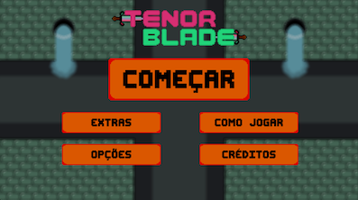
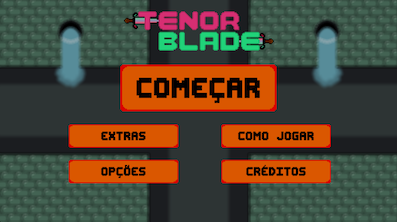
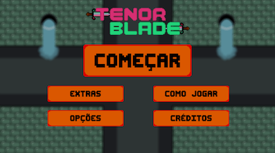
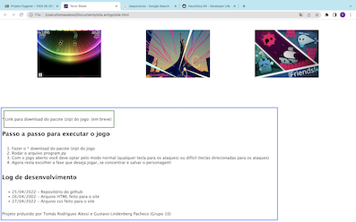
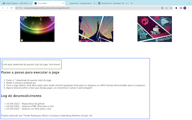
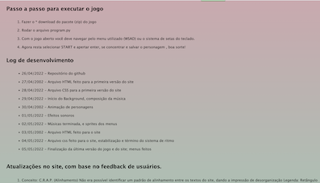
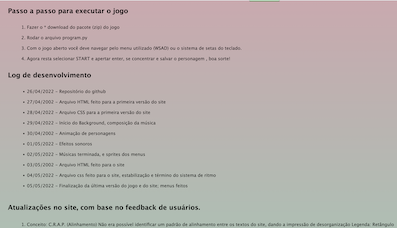

Tenor Blade é um jogo de ritmo, onde um misterioso protagonista se encontra situado no centro da tela, em um esgoto. Terríveis monstros de esgoto o atacam pelas quatro direções cardeais, de acordo com o ritmo da música. Com a finalidade de ajudar o personagem, o jogador precisa golpear os inimigos no timing correto, para destruí-los antes que causem dano e reduzam seu HP para zero, causando sua morte. A fim de sobreviver e derrotar os monstros cabe ao player, ter a habilidade de golpear ao ritmo da música. Acha que está preparado para essa experiência musical desafiadora?

 

 
